布尔修改器–knight翻译¶
The Boolean modifier performs operations on meshes that are otherwise too complex to achieve with as few steps by editing meshes manually. The Boolean modifier uses one of three Boolean operations that can be used to create a single mesh out of two mesh objects:
| Difference: | Negation |
|---|---|
| Union: | Conjunction |
| Intersect: | Disjunction |

The Union, Intersection and Difference between a Cube and a UV Sphere, with the modifier applied to the Sphere and using the cube as target.
注解
布尔修改器适用于开放和封闭的形体。
- The Boolean modifier does not work on edges without faces.
目标的拓扑结构决定着修改网面的新的拓扑结构。
计算时，面的法线也考虑在内。
- Whether faces are marked for smooth or flat for shading does not affect the calculations of this modifier.
该修改器算出的线条由修改网面和目标的面的首个切线接触点划定界限。
小技巧
这是一个动态实时修改器！
If you have marked your Objects to show the Edges (in , enable Wire), you will see the Edge creation process while you are moving your Objects. Depending on your mesh topology, you can also enable X-Ray and Transparency and see the topology being created in real time.
用法¶
To use the Boolean Modifier select the desired mesh Object then add a Boolean modifier. When you add the Boolean modifier for an object, Blender will need a second object to be the target of the operation. You can use open or closed meshes, as long as they have available face normals for the calculations to take effect. You can add one or more modifiers of this type for an Object but you can only apply one operation for the Boolean modifier at a time.
选项¶
Boolean Modifier Options.
操作¶
- 操作
将使用的布尔操作。
- 差
从目标网面减去修改的网面。
如果目标网面的法线是反的，Blender会对修改的网面求交。
如果修改的网面的法线是反的，Blender将添加两个网面（并）。
如果两个网面的法线都是反的，Blender将对目标网面求交。
- 并
目标网面添加到修改的网面。
如果目标网面的法线是反的，Blender会对目标网面求交。
如果修改的网面的法线是反的，Blender会减去目标网面。
如果两个网面的法线都是反的，Blender将对修改的网面求交。
- 交
修改的网面减去目标网面。
如果目标网面的法线是反的，Blender会减去目标网面。
如果修改的网面的法线是反的，Blender会对目标网面求交。
如果两个网面的法线都是反的，Blender会添加两个网面（并）。
- 物体
目标网面物体的名字
- Solver
- TODO
材质¶
布尔修改器保留了参与运算的网面的材质，包括它们的基本纹理和映射方式，修改的网面的材质索引将被分配到新的拓扑结构上（第一个活动状态下的材质）。
Below, some examples are shown to exemplify how materials work with the Boolean modifier; we took the cube as the modified mesh, and the icosphere as the target with one material (white). We added four different indexes to one of the faces of the cube, leaving another basic material in the other faces. The top left image shows how the Boolean modifier interacts with the materials. The other three images show the three different Boolean operations applied to the modified mesh. In all the images the meshes have normals pointed outwards with the Icosphere as the target, and the Cube being the modified mesh.
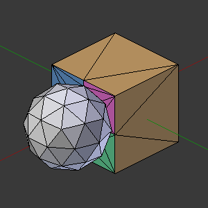
Cube with Multi-Materials and Icosphere with basic Material. |
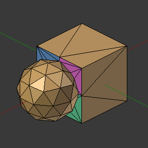
Union: The first active Material of the Cube is added to the new topology. |
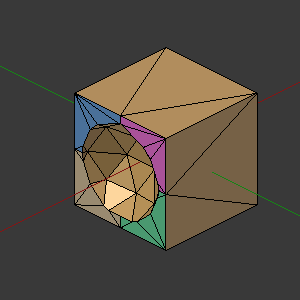
Difference: The Icosphere was subtracted from the Cube. |
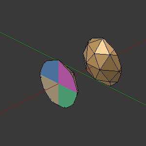
Intersect: The resulting Mesh was copied and rotated 180. |
The only exception is the difference operation when the normals of the target and modified mesh are inverted. In this case, Blender will project the textures in an inverted direction over the target using the center contact of the meshes as a pivot and the resulting mesh will have the modified mesh subtracted from the target. For complex target meshes in some particular cases, you may have to reassign materials to faces because Blender will use the possible projection, and this may result in a sub-optimal texture assignment. You can see this in the last example below.
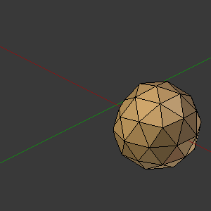
Front of the target with the modified mesh materials. |
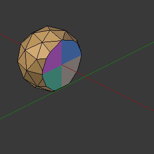
Back of the target with the modified mesh materials. |
UV映射¶
当你映射UV图到目标上时，Blender将为目标的每个的面附加一张图。当你应用布尔修改器时，Blender将按照已分配给目标的面的拓扑来弄，该UV图将成为修改的网格的操作结果。Blender也将使用相同的图像，该图像源自修改的网面且映射到目标网面的面。
警告
取决于你在UV展开时赋予纹理给面的方式，以及你网面的复杂性，布尔操作可能会为新的面产生不太好的UV。
Below we have four Images, a UV sphere mapped with a test grid tinted blue and the other face tinted in purple, one face of the cube tinted in a light orange and the other faces using the normal test grid. The first image shows the operation at the start (difference), and on to the right of that shows the resulting mesh. And in the bottom row we show the unwrap in the Blender UV/Image Editor.
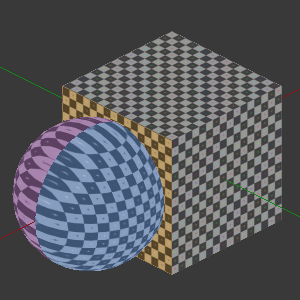
A UV Sphere and a Cube with different UV Maps. |
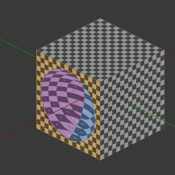
Difference operation applied. |
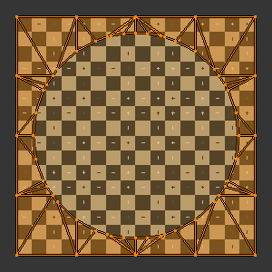
Faces of the modified mesh mapped. |
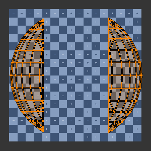
New topology mapped and UV faces assigned. |
其他修改器¶
The Boolean modifier calculation is performed using the target modified mesh topology and dimensions. Other modifiers added to the modified mesh are bypassed. This means that if a target is using another modifier, like Subdivision Surface, the resulting topology for the modified mesh will take into account the subdivision of the target; but for the modified mesh, the basic topology is used anyway (see examples).
If you add Subdivision Surface to the modified mesh with a Boolean modifier, Blender will visually add the subdivision for the modified mesh, but not for its calculations; it will only take into account its basic mesh topology. If you want to have a Subdivision Surface modifier added to the modified mesh, you have to apply the Subdivision Surface to the Boolean modified mesh before applying the Boolean operation.
The Boolean modifier can be added together with other modifiers in the modified mesh,
but depending on the modifier, the calculations cannot be done and/or the modifier cannot execute.
When the modifier cannot execute, it will show the message "Cannot execute boolean operation",
and when the modifier cannot be applied to the mesh,
Blender will show the message "Modifier is disabled, Skipping Apply.".
In this case, you either have to remove some modifiers or apply the necessary ones.
最常见的情形是当你添加或复制一个布尔修改器，用修改的网面配合另一个目标后期使用时，Blender会在栈上随后的布尔修改器提示警告信息，因为你可能对同一个修改的网面创建了并发的布尔操作，这也是多数情况下不可能执行下去的，它取决于你选择的目标。这种情况下，你可以对目标应用栈上第一个布尔修改器，接着用栈上其他布尔修改器完成接下来的操作。
此外，如果一些其他的修改器置于此修改器之上，你点击了应用按钮，Blender会警告你 "没有首先应用其他的修改器在，结果可能不如预期"。该修改器的最佳使用场合是准备好你待修改的网面和目标网面，然后再使用布尔修改器。
当布尔修改器是栈上第一个修改器并且应用后，其他修改器将作用于布尔操作后的网面，用布尔操作后的拓扑，并且留在修改器栈上。
Below are two images: one with the Subdivision Surface modifier added to the target, and another with the resulting topology.
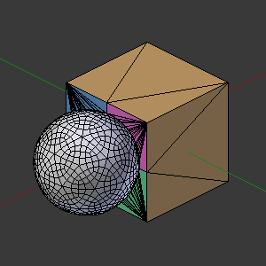
Modifier with Subdivision Surface Target. |
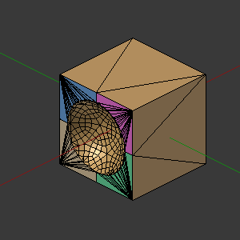
The Resulting Topology. |
As you can see, the added (not applied) Subdivision Surface modifier to the target was taken into consideration. The topology of the Icosphere with (Level 2) subdivision was completely transferred to the modified mesh.
小技巧
目标拓扑决定着最终的拓扑。
目标拓扑确定着布尔修改器操作的结果。这意味着，任何添加到目标并修改其拓扑的修改器会影响操作的最终网面。
并发操作¶
对于修改的网面，你每次只能应用一次操作，但对其他修改的网面可以使用同一个目标，或使用修改的网面作为目标提供给其他网面也行。此外，您可以多次复制或添加相同的修改器到修改器栈上，以满足你所需的操作数量。但要注意，如果你选择了并发目标，此目标同时是指向对方的修改的网面，会导致Blender因组成的闭环而崩溃！
面的法线¶
When using the Boolean modifier, Blender will use the face normal directions to calculate the three Boolean operations. The direction of the normals will define the result of the three available operations. When one of the participants has inverted normals, you are in fact multiplying the operation by -1 and inverting the calculation order. You can, at any time, select your modified mesh, enter Edit Mode and flip the normals to change the behavior of the Boolean modifier. See Tips: Fixing Mixed Normals below.
当参与者的一个或多个网面法线在接触的地方既有向外又有向内混合着的法线时，Blender也不能对布尔操作作优化处理。
这意味着操作中，你可以使用完全指向参与者里或外的网面法线，但是你不能对用来计算的拓扑面混用指向里和指向外的法线。在这种情况下，Blender会启用修改器，你可能也会应用修改器，但坏事是没有效果。我们做了一个关于立方体和正二十面体的例子来说明结果。
In the images below, all face normals are pointing outwards (Normal meshes).
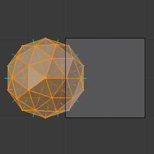
Faces with normals pointing outwards. |
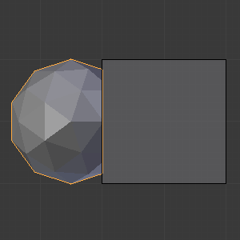
Normal Boolean modifier operation (Difference operation). |
In the images below, all face normals are inverted and using the intersection operation
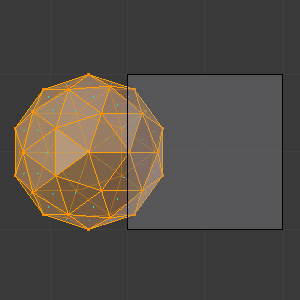
Boolean Operation with inverted normals. |
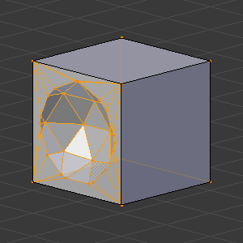
Normal Boolean modifier operation. |
Now, let us see what happens when the normal directions are mixed for one of the participants in the Boolean modifier operation. The images below show face normals mixed, pointed to different directions and the resulting operation, you can see that the modifier has bad effects when applied, leaving faces opened:
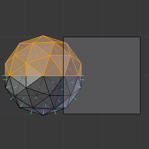
Face normals mixed, pointed to different directions. |
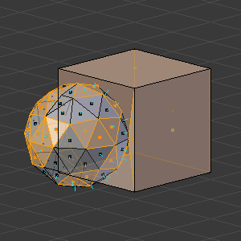
Resulting operation leaves faces opened. |
As you can see, the normal directions can be pointing to any of the Mesh sides, but cannot be mixed in opposite directions for the faces of the participants. The Library cannot determine properly what is positive and negative for the operation, so the results will be bad or you will have no effect when using the Boolean modifier operation.
A quick way to fix this is to use Blender’s Recalculate Normals operation in Edit Mode.
If you still have some ugly black gouges you will have to Manually Flip the Normals.
空洞的面或重复的面¶
This modifier does not work when the modified and/or the target mesh uses empty faces in the topology used for calculations. If the modifier faces a situation where you have empty faces mixed with normal faces, the modifier will try, as much as possible, to connect the faces and apply the operation. For situations where you have two concurrent faces at the same position, the modifier will operate on the target mesh using both faces, but the resulting normals will get messed. To avoid duplicated faces, you can remove doubles for the vertices before recalculating the normals outside or inside. The button for remove doubles is located in the Mesh Tools Panel in the 3D View, while in Edit Mode.
该修改器的最佳使用场合是在你对网面作了清理，面都明显地指向一个方向（向内/向外）。
下面显示了一个网面的例子，网面带着张开的面并与正常的面混合来创建新的拓扑。在这个例子中，应用了立方体和正二十面体之间的差，但Blender连接正二十面体的副本到立方网面上，尽可能地尝试应用。
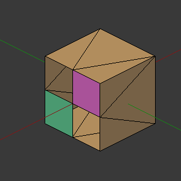
Mesh with two empty faces mixed with normal faces. |
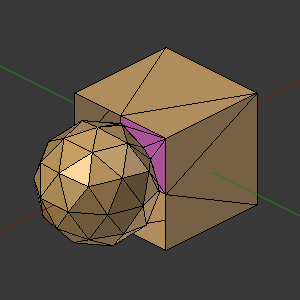
Result of a difference operation applied. |
张开的形体¶
The Boolean Modifier permits you to use open meshes or non-closed volumes (not open faces).
When using open meshes or non-closed volumes, the Boolean modifier will not perform any operation in faces that do not create a new topology filled with faces using the faces of the target.
In the images below, is the resulting operation when using two non-closed volumes with faces forming a new topology.
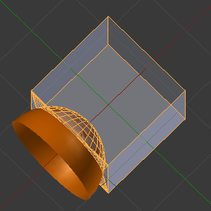
Non-closed volumes forming a new topology. |
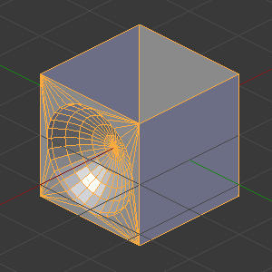
Resulting operation using two open volumes. |
Now, let us see what happens when we use meshes that are partially open, incomplete, or meshes that are not forming a new topology.
As you can see in the images below the faces of one participant in the Boolean operation gives incomplete information to the modifier. The resulting edges get messy and there is not enough information to create faces for the resulting Mesh. This example uses a smooth shaded UV-sphere cut in half. As explained before, the shading (smooth/flat) does not affect the calculations of the modifier.
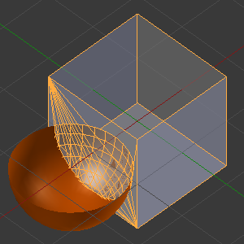
Open volumes that are not forming a new topology. |
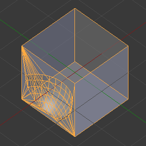
Resulting Operation of image on the left |